原课程Lessson29～Lesson30课，svd其实是正定的延伸，正定是一种特殊的svd；线性变换是矩阵的基础与来源
SVD奇异变换
SVD定义
SVD是找到A的一组行向量空间的正交基，通过线性变换，变成列空间的一组正交基的运算。用公式表达为：
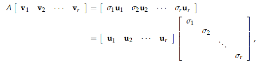
由于是行向量的变换，所有A是左乘V，得到的结果不一定是单位正交的，通过对角阵来表示。
这里还可以回忆一下4个基本向量空间：V1…Vr 是在行向量空间，那么Vr+1…Vn就是在就会在Nullspace。
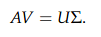
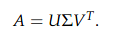计算
计算是利用的正定，通过ATA，来计算V；通过AAT来计算U。
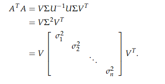示例1
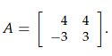
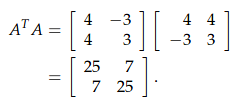
求得ATA的特征值是32 与 18， 特征向量是v1=[1 1]T 与 v2=[1 -1]T
将特征向量标准化:
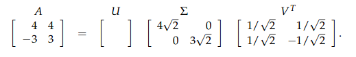
同样的道理来求AAT
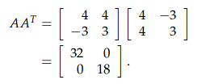
这里由于正好是对角化，于是原课中，直接使用了u1=[1 0]T 与 u2=[0 1]T
这样做造成了结果的不一致，而需要通过最原始的进行验证符号， Av2 = σ2u2
于是u2=[0 -1] 最后结果为：
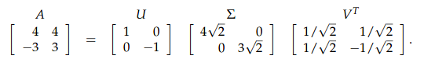示例2
原文中给出了奇异状态下的分解：
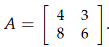
由于奇异，也就只有一个行向量，只有一个特征值(另一个为0)
v1=[0.8 0.6]T同样的求法：先求ATA，再求AAT，最后得结果
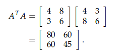
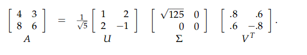这里给出了结果，由于只有一个行向量，而又是2*2的矩阵，另一个V其实是nullspace的基
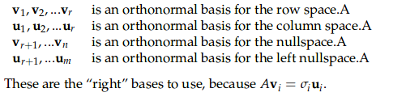
线性变换
定义
一个公式：T(cv + dw) = cT(v) + dT(w)，其中c、d是常数，v、w是向量。
等同于2个公式：T(v+w) = T(v) + T(w); T(cv) = cT(v)
如此T(0) = 0线性变换与矩阵
理解一个线性变换最好的方式，是找到变换后面的矩阵。为此，要引入基向量与坐标。T(v) = Av，因为：
A(v+w) = A(v)+A(w)
A(cv) = cA(v)给定一个变换T，如何得到一个矩阵A能够代表它呢？
首先要选定2组基，如v: v: v1,v2…vn，是Rn中的基，w: w1,w2…wm。是Rm中的基。v是input，w是output。
T(vi) = a1iw1 + a2iw2…+amiwm示例1
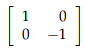
T(v) = Av
在R2空间中，对于每一个input v=[x, y]T，A会将其x值保持不变，而y值取反。结合图像，针对x轴做了对称示例2
求导也是一种线性变换
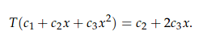
这是一个3维空间向2维空间变换的例子，取输入的基为3维：v1 = 1, v2 = x, v2 = x2，输出的的基为2维：w1 = 1, w2 = x
由此得到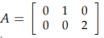
由此得到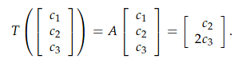结论
对于每一个线性变换，都有一个A与之对应，使得T(v) = Av。
如果A是可逆的，则线性变换的逆变换 对应的矩阵就是A-1
两个变换的乘积变换： T1 : v <--> A1v ; T2 : w <--> A2w。则这个变换对应的矩阵是A2A1。这是矩阵乘积的来源。